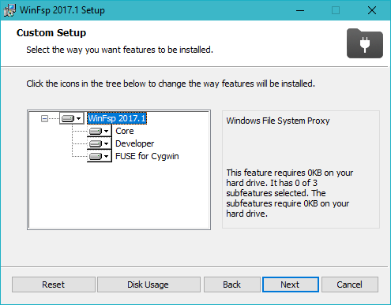
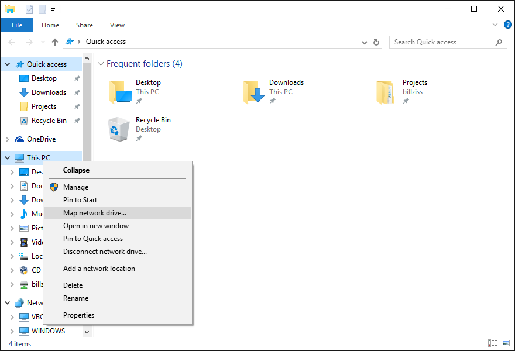
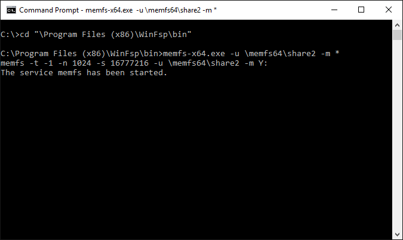
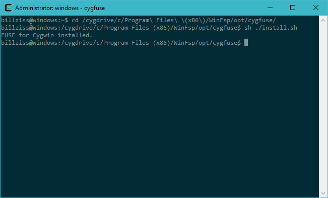

Download
WinFsp is released in the form of an MSI installer that includes a signed driver and all files necessary to run and develop user mode file system on Windows. The installer supports Windows native, FUSE, .NET and Cygwin file systems out of the box. Download the latest version here.
Repository · Changelog
Additional Downloads
WinFsp installation required
SSHFS-Win (x64)
SSHFS-Win (x86)
Repository
NFS-Win (x86)
Repository
Quick Start Guide
- Download and run the WinFsp installer.
- In the installer select the option to install the developer files. These include the MEMFS sample file system, but also header and library files that let you develop your own user-mode file system.
- You should not need to reboot, unless WinFsp was already running on your system.

Launch WinFsp from the Windows Explorer
- Open Windows Explorer
- Select “This PC”. Right-click and select “Map network drive…”
- Map a drive to
\\memfs64\share. (Assuming a 64-bit machine. Try\\memfs32\shareif you have a 32-bit machine.) - After a few seconds a new Explorer window will open up for your new drive.
- The file system behind this drive is a case-insensitive in-memory file system (MEMFS).
- When you are done, you can simply right click on the drive from Windows Explorer and select “Disconnect”.

Launch WinFsp from the Command Prompt
- Start a non-admin Command Prompt.
- Navigate to the folder where you installed WinFsp:
cd C:\Program Files (x86)\WinFsp\bin - Execute the command:
memfs-x64 -u \memfs64\share2 -m *. (Assuming a 64-bit machine. Trymemfs-x86 -u \memfs32\share2 -m *if you have a 32-bit machine.) - Open a second non-admin Command Prompt and navigate to the new drive.
- When you are done, you can just press Ctrl-C to kill the MEMFS process from the first command prompt.

For Cygwin users
The installer includes a FUSE package that can be installed on 32-bit or 64-bit Cygwin. This allows software such as SSHFS and FUSEPY to be built and run on Cygwin with minimal changes.
To install the FUSE package to Cygwin perform the following steps:
$ cd opt/cygfuse/ <1>
$ sh ./install.sh <2>
- From a Cygwin command prompt change to the subdirectory
opt/cygfuseunder the WinFsp installation directory. - Execute the command
sh ./install.shwhich will install the necessary FUSE files. This includes FUSE runtime and development files.
To uninstall the FUSE package to Cygwin perform the following steps:
$ cd opt/cygfuse/ <1>
$ sh ./uninstall.sh <2>
- From a Cygwin command prompt change to the subdirectory
opt/cygfuseunder the WinFsp installation directory. - Execute the command
sh ./uninstall.shwhich will uninstall all previously installed FUSE files.
